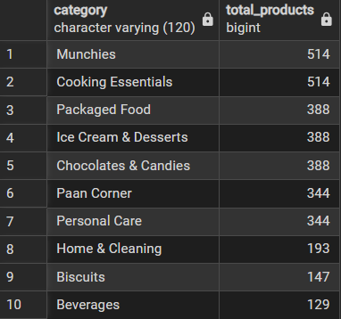
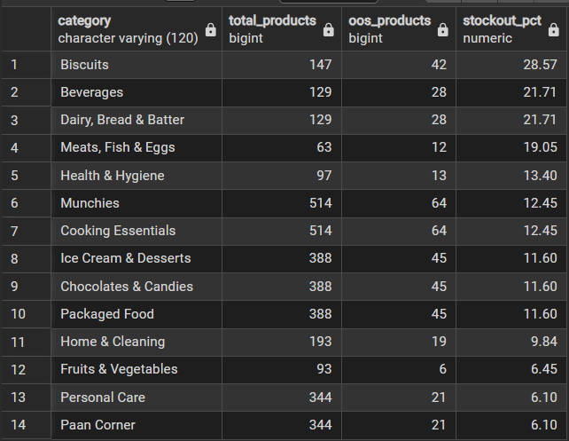
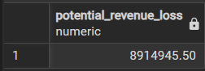
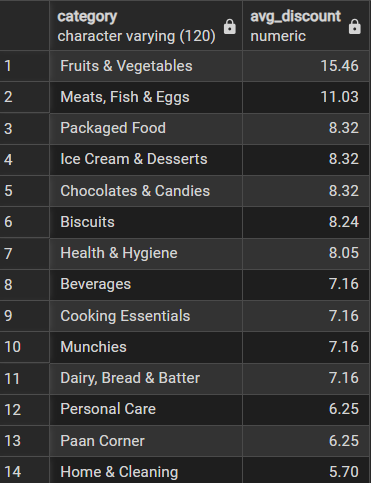
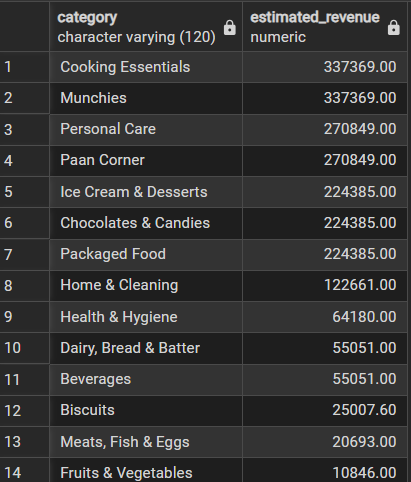
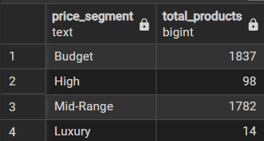
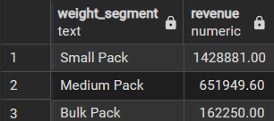

A structured SQL-based investigation into Zepto's product pricing strategy, discount effectiveness, inventory health, and revenue opportunity across 14 product categories and 3,731 SKUs.
This case study applies SQL-driven analysis to Zepto's grocery inventory dataset to uncover patterns in pricing, stock availability, discount dependency, and revenue generation. The analysis reveals that Zepto operates as a mass-market, value-driven platform with strong concentration in FMCG categories. Key findings include an estimated ₹8.91 million revenue loss from out-of-stock products, a clear consumer preference for small-pack formats, and a pricing structure heavily weighted toward the budget and mid-range segments. Strategic opportunities exist in inventory replenishment for high-stockout categories, margin optimization in discount-heavy segments, and prioritized investment in top revenue-contributing categories.
Kaggle — Zepto Inventory Dataset. Imported into PostgreSQL via pgAdmin 4 after CSV conversion.
Pricing structure, discount strategy, stock availability, revenue estimation, category performance, and product segmentation.
Aggregate functions, CASE statements, window functions (RANK, SUM OVER), subqueries, and conditional filtering.
SELECT COUNT(*) AS total_records FROM zepto;
The dataset contains 3,731 product records, providing a statistically robust base for category-level and platform-level business conclusions.
A dataset of ~3,700+ SKUs is sufficient to draw reliable segment-level insights. However, for time-series analysis (demand trends, seasonal patterns), this snapshot should be complemented with historical inventory logs. Benchmarking this count against Zepto's reported catalog size (~8,000+ SKUs on the app) would also reveal the dataset's coverage rate.
SELECT * FROM zepto WHERE name IS NULL OR category IS NULL OR mrp IS NULL OR discountPercent IS NULL OR discountedSellingPrice IS NULL OR weightInGms IS NULL OR availableQuantity IS NULL;
No null values were detected across any critical column. The dataset is complete and structurally sound, making it reliable for business analysis without imputation.
While structural completeness is confirmed, semantic quality should also be verified — for instance, checking whether product names are standardized (no abbreviations or encoding errors), whether category labels are consistent, and whether weight values are in correct units. Clean data at entry point reflects well-maintained upstream data pipelines.
SELECT DISTINCT category FROM zepto ORDER BY category;
Zepto's inventory spans 14 distinct product categories ranging from perishables (Fruits & Vegetables, Meats & Fish) to FMCG staples (Munchies, Biscuits, Beverages) and household essentials (Home & Cleaning, Personal Care).
Fourteen categories reflect a deliberately curated quick-commerce portfolio. Unlike traditional retailers with 50–100 categories, Zepto's narrow but deep catalog signals an "essential purchases" positioning. From a business lens, category rationalization should be evaluated periodically — each category must justify its logistics cost and consumer demand frequency.
SELECT outOfStock, COUNT(sku_id) AS total_products FROM zepto GROUP BY outOfStock;
3,278 products in stock (87.8%) and 453 out of stock (12.1%). While the headline availability rate appears healthy, a 12% unavailability rate in a quick-commerce context — where instant delivery is the core promise — is a material operational concern.
In quick-commerce, acceptable stockout rates are typically below 5%. A 12.1% rate warrants investigation by category to identify whether stockouts are concentrated in specific segments (e.g., perishables, high-velocity SKUs) and requires a root-cause analysis of replenishment lag times.
SELECT name, COUNT(sku_id) AS number_of_skus FROM zepto GROUP BY name HAVING COUNT(sku_id) > 1 ORDER BY number_of_skus DESC;
Approximately 1,214 products appear under the same name with multiple SKUs. This represents 32.5% of the catalog — indicating widespread variant-level differentiation (pack sizes, weights, or flavors under a single brand name).
Multi-SKU products should be analyzed as product families, not individual items. A parent-child SKU taxonomy (e.g., "Amul Butter 100g", "Amul Butter 500g") would improve analytics precision — allowing per-variant demand modeling and preventing inflated count-based metrics.
-- Identify invalid records SELECT * FROM zepto WHERE mrp = 0 OR discountedSellingPrice = 0; -- Remove zero-MRP records DELETE FROM zepto WHERE mrp = 0; -- Convert paise to rupees UPDATE zepto SET mrp = mrp / 100.0, discountedSellingPrice = discountedSellingPrice / 100.0;
Products with MRP = 0 were identified as erroneous entries and removed. Pricing data was stored in paise and required division by 100 for rupee-denominated analysis — a common raw data formatting issue when sourcing from e-commerce APIs.
In production analytics pipelines, zero-price records should trigger automated data quality alerts at ingestion. For this dataset, logging the count of deleted records and their category distribution would ensure no systemic data gap was introduced by the cleaning step.
SELECT category, COUNT(*) AS total_products FROM zepto GROUP BY category ORDER BY total_products DESC LIMIT 10;

Munchies and Cooking Essentials lead the catalog with the highest SKU counts, followed by Packaged Food, Ice Cream & Desserts, and Chocolates & Candies. These five categories collectively dominate the inventory breadth.
High SKU count is a supply-side signal, not necessarily a demand signal. Cross-referencing SKU count with category revenue contribution and sell-through rate will identify whether breadth in Munchies and Cooking Essentials is justified by consumer demand — or whether it's creating unnecessary inventory complexity.
SELECT name, category, mrp FROM zepto ORDER BY mrp DESC LIMIT 10;
Premium products are concentrated in Cooking Essentials (olive oil, ghee) and Personal Care (diapers). Borges Extra Light Olive Oil and Pampers variants command the highest MRP values, signaling aspirational FMCG purchase behavior among Zepto's urban customer base.
Premium products serve dual purposes — they elevate perceived platform quality and generate higher absolute margin per transaction even at moderate discount rates. Monitoring the sell-through velocity of these items relative to budget alternatives helps calibrate optimal inventory allocation for premium vs. mass SKUs.
SELECT DISTINCT name, category, mrp, discountedSellingPrice, discountPercent FROM zepto ORDER BY discountPercent DESC LIMIT 10;
Discounts reach as high as 50–51%, primarily in Biscuits, Cooking Essentials, Dairy, and Packaged Food. This level of promotional depth suggests either manufacturer-funded trade promotions or platform-subsidized discounting to drive category adoption.
Discounts above 40% should be evaluated on a product-level P&L basis. If platform-funded, these promotions are essentially customer acquisition spend — and should be measured in terms of basket size uplift, repeat purchase rate, and customer lifetime value, not just immediate revenue impact.
SELECT DISTINCT name, category, mrp FROM zepto WHERE outOfStock = TRUE AND mrp > 300 ORDER BY mrp DESC;
Several high-value products including premium ghee, baby care, flour, and spice products are out of stock. These are items with MRP >₹300 where a single stockout event translates to a significant lost revenue opportunity per potential transaction.
High-MRP stockouts should trigger priority replenishment alerts. Implementing a tiered restocking SLA — where products above ₹300 MRP have a shorter replenishment cycle than budget items — would protect both revenue and customer satisfaction for the platform's most valuable SKUs.
SELECT category, COUNT(*) AS total_products, SUM(CASE WHEN outOfStock = TRUE THEN 1 ELSE 0 END) AS oos_products, ROUND( SUM(CASE WHEN outOfStock = TRUE THEN 1 ELSE 0 END) * 100.0 / COUNT(*), 2) AS stockout_pct FROM zepto GROUP BY category ORDER BY stockout_pct DESC;

Biscuits leads with ~28.6% stockout rate, followed by Beverages and Dairy, Bread & Batter. These categories show systemic replenishment gaps that likely reflect supply chain constraints, high consumer velocity, or sub-optimal safety stock thresholds.
A 28% stockout rate in Biscuits — a high-frequency, habitual purchase category — is operationally significant. Zepto should calculate category-level reorder points using historical velocity data. For Biscuits and Beverages, automated low-stock alerts at 20% remaining inventory (rather than 0%) would allow proactive restocking before customer-facing stockouts occur.
In quick-commerce, customers who encounter a stockout often switch platforms entirely for that session — and may not return. High stockout rates in impulse-purchase categories like Biscuits have an outsized churn impact relative to their individual transaction value.
SELECT ROUND(SUM(discountedSellingPrice * quantity), 2) AS potential_revenue_loss FROM zepto WHERE outOfStock = TRUE;

Out-of-stock products represent an estimated ₹8.91 million in potential revenue loss. This figure underscores that inventory availability is not just an operational metric — it is a direct revenue lever.
This ₹8.91M figure should be contextualized against total platform revenue to compute a "stockout revenue leakage rate." If total inventory value is in the hundreds of millions, this loss represents a meaningful but addressable gap that could be closed with targeted replenishment investment and demand forecasting improvements.
SELECT category, ROUND(AVG(discountPercent), 2) AS avg_discount FROM zepto GROUP BY category ORDER BY avg_discount DESC;

Fruits & Vegetables: 15.46% avg discount — highest across all categories. Home & Cleaning has the lowest at 5.70%. Perishable and commodity categories exhibit significantly higher discount dependency than non-perishable essentials.
Discounting in Fruits & Vegetables likely serves a dual function: reducing wastage from perishable inventory and stimulating volume sales. A dynamic markdown strategy — where discount depth increases as products approach expiry — would be more margin-efficient than a blanket average discount approach.
SELECT category, ROUND(AVG( (discountedSellingPrice / mrp) * 100 ), 2) AS price_retention_pct FROM zepto GROUP BY category ORDER BY price_retention_pct DESC;
Home & Cleaning retains ~94% of MRP after discounting, indicating strong pricing power. Fruits & Vegetables retains only ~84% — reflecting the highest discount pressure of any category in the portfolio.
High margin retention in Home & Cleaning suggests these products are purchased on need rather than promotion — a sign of inelastic demand. This is a strategically important category for profitability optimization. In contrast, Fruits & Vegetables' low retention warrants a review of whether deep discounting is truly driving incremental volume or simply compressing margins on baseline demand.
SELECT name, category, mrp, discountPercent FROM zepto WHERE mrp > 1000 AND discountPercent > 30 ORDER BY discountPercent DESC;
A small segment of premium products — primarily specialty cooking oils and baby care items — carry discounts exceeding 30% on MRP above ₹1,000. These represent cases where promotional intensity could undermine the premium positioning these products rely on.
For premium SKUs, deep discounting is a double-edged strategy. While it can drive trial and volume uplift, sustained heavy discounts train consumers to wait for promotions, reducing the perceived regular-price value. A "smart promotion" approach — limited-time, targeted to first-time or lapsed buyers — would be more brand-protective than always-on deep discounts.
SELECT name, category, mrp FROM zepto WHERE discountPercent = 0;
A segment of products maintains full MRP pricing with zero discount. These SKUs either benefit from inelastic consumer demand (staple items), strong brand loyalty, or limited promotional budget allocation.
Zero-discount products should be analyzed for their sell-through rate. If velocity is high at full price, these are the platform's most profitable SKUs. If velocity is low, even a modest 5–8% introductory discount may unlock latent demand and improve inventory turnover.
SELECT category, ROUND(SUM(discountedSellingPrice * availableQuantity), 2) AS estimated_revenue FROM zepto GROUP BY category ORDER BY estimated_revenue DESC;

Cooking Essentials, Munchies, and Personal Care are the top three revenue-generating categories, each contributing significantly to total estimated platform revenue. These three categories form Zepto's commercial backbone.
Revenue concentration in three categories is both a strength and a risk. While these categories should receive prioritized inventory investment and promotional support, Zepto should also develop emerging categories (e.g., Health & Hygiene, Meats & Fish) to diversify revenue streams and reduce dependence on any single segment's performance.
SELECT category, ROUND( SUM(discountedSellingPrice * availableQuantity) * 100.0 / SUM(SUM(discountedSellingPrice * availableQuantity)) OVER(), 2) AS revenue_percentage FROM zepto GROUP BY category ORDER BY revenue_percentage DESC;
Revenue is heavily concentrated in Cooking Essentials, Munchies, and Personal Care — together accounting for a disproportionate share of total estimated inventory revenue. The window function technique enables accurate percentage computation without a subquery, making it more efficient for large datasets.
A revenue Pareto analysis (80/20 rule) of categories would be a natural next step — identifying the minimum number of categories that generate 80% of revenue. This informs strategic prioritization: which categories need dedicated category managers, which benefit from enhanced promotional spend, and which can be managed with lighter operational oversight.
SELECT category, ROUND(AVG(discountPercent), 2) AS avg_discount, ROUND(SUM(discountedSellingPrice * availableQuantity), 2) AS revenue FROM zepto GROUP BY category HAVING AVG(discountPercent) < 10 ORDER BY revenue DESC;
Cooking Essentials (~7.16% avg discount), Munchies, Personal Care, and Home & Cleaning generate strong revenue with below-10% average discounts — indicating these categories sell on the strength of product demand, not promotional stimulation.
These categories represent Zepto's highest-quality revenue — they demonstrate pricing power and organic demand. Strategic investment here should focus on expanding SKU depth, improving availability, and enhancing premium product representation rather than increasing promotional spend.
SELECT CASE WHEN discountedSellingPrice < 100 THEN 'Budget' WHEN discountedSellingPrice BETWEEN 100 AND 500 THEN 'Mid-Range' WHEN discountedSellingPrice BETWEEN 500 AND 1000 THEN 'High' ELSE 'Luxury' END AS price_segment, COUNT(*) AS total_products FROM zepto GROUP BY price_segment;

Budget (1,837 products) and Mid-Range (1,782) together account for ~97% of the catalog. Only 98 products fall in the High tier and 14 in Luxury — confirming Zepto's clear mass-market, affordability-first positioning.
The near-absence of a Luxury segment (0.4% of SKUs) may be an intentional strategic choice for a quick-commerce platform competing on speed and price. However, as Zepto expands into Tier-1 metro premium corridors, a curated "premium aisle" strategy — 50–80 luxury SKUs across select categories — could increase average order value and attract higher-income customer cohorts.
SELECT CASE WHEN weightInGms < 500 THEN 'Small Pack' WHEN weightInGms BETWEEN 500 AND 2000 THEN 'Medium Pack' ELSE 'Bulk Pack' END AS weight_segment, ROUND(SUM(discountedSellingPrice * availableQuantity), 2) AS revenue FROM zepto GROUP BY weight_segment ORDER BY revenue DESC;

Small Pack products generate the highest revenue at ~₹1.43 million, far outpacing Medium (~₹651K) and Bulk (~₹162K) formats. This confirms that Zepto's consumer base purchases in small, frequent quantities rather than in bulk.
Small-pack dominance is structurally aligned with the quick-commerce use case — consumers on Zepto are solving an immediate need, not stocking up. Inventory strategy should maximize SKU depth in sub-500g formats, especially in Munchies, Dairy, and Packaged Food. Bulk formats may need repositioning as a value offering ("bulk buy, save more") to improve their revenue contribution.
SELECT DISTINCT name, weightInGms, discountedSellingPrice, ROUND(discountedSellingPrice / weightInGms, 2) AS price_per_gram FROM zepto WHERE weightInGms >= 100 ORDER BY price_per_gram ASC;
Staple grocery products — salt, onions, potatoes — offer the lowest price per gram, reflecting their commodity nature. This metric confirms that Zepto's affordability proposition is strongest in its staple produce and cooking staple categories.
Price-per-gram normalization is a powerful consumer-facing transparency tool as well as an internal pricing audit mechanism. Internally, anomalies (e.g., a 100g pack more expensive per gram than a 500g pack from the same brand) should trigger pricing rule reviews to prevent consumer-facing inconsistencies.
SELECT name, category, availableQuantity, discountPercent FROM zepto WHERE availableQuantity < 20 AND discountPercent > 20 AND outOfStock = FALSE ORDER BY availableQuantity ASC;
Products matching all three conditions — limited remaining stock, high promotional discount, and not yet marked out of stock — include items from Packaged Food, Biscuits, Cooking Essentials, Dairy, and Personal Care. These are likely in the final phase of their replenishment cycle and represent imminent stockout risks.
This proxy logic is a practical workaround when point-of-sale velocity data is unavailable. For production use, this query should be scheduled to run daily as an automated early-warning dashboard for supply chain teams. Integrating this with a replenishment trigger — automatically generating a purchase order when both conditions are met — would convert a reactive insight into a proactive operational workflow.
SELECT name, category, discountedSellingPrice, availableQuantity FROM zepto WHERE discountedSellingPrice > 500 AND availableQuantity < 10 ORDER BY discountedSellingPrice DESC;
Multiple premium SKUs (cooking oils, ghee, baby care, personal care) have fewer than 10 units remaining and a selling price above ₹500. Each lost sale from these products represents a high per-unit revenue miss.
Calculate the total revenue at risk from this segment (selling price × remaining units for each qualifying product). This creates a prioritized "watch list" for operations teams. Premium products in this risk zone should have higher safety stock thresholds — e.g., minimum 25 units rather than the standard threshold — to buffer against demand spikes and delivery delays.
SELECT category, name, discountPercent, RANK() OVER( PARTITION BY category ORDER BY discountPercent DESC ) AS discount_rank FROM zepto;
Beverages category contains multiple products sharing the top discount rank at 50%, indicating that promotional pricing is broadly applied across many SKUs rather than concentrated in a few — suggesting category-level promotional strategies rather than product-specific ones.
Category-level discount uniformity may indicate blanket trade promotions from brand partners rather than data-driven, demand-responsive pricing. Shifting toward SKU-level dynamic pricing — where only the lowest-velocity products receive maximum discounts — would preserve margins on high-velocity items while still moving slow-moving stock.
SELECT name, discountedSellingPrice, SUM(discountedSellingPrice) OVER(ORDER BY discountedSellingPrice DESC) AS running_total FROM zepto;
Running totals reveal that premium products — edible oils, ghee, baby care — contribute disproportionately to cumulative revenue accumulation. The revenue curve is steep at the high-price end, confirming that a small number of expensive SKUs carry significant weight in total platform revenue.
This running total analysis is the foundation for a proper revenue concentration analysis (Lorenz curve / Gini coefficient for SKUs). Identifying the top 10% of SKUs by price and computing their share of total revenue would clarify how sensitive platform revenue is to stockouts in the premium tier.
SELECT category, COUNT(*) AS total_products, ROUND(AVG(discountPercent), 2) AS avg_discount, MAX(discountPercent) AS max_discount FROM zepto GROUP BY category ORDER BY avg_discount DESC;
Fruits & Vegetables (15.46% avg, max ~50%), Meats & Fish (>11% avg), and Packaged Food show the highest promotional intensity. Biscuits records the single highest individual discount at 51%. Home & Cleaning (5.70% avg) and Personal Care maintain the most stable pricing across their catalog.
A high gap between average and maximum discount within a category (e.g., avg 11% but max 50% in Meats & Fish) indicates bimodal discount distribution — most products are lightly discounted while a few carry extreme promotions. Segmenting by discount quartile within each category would clarify the promotional structure and help rationalize discount spend.
SELECT name, category, ROUND(mrp * availableQuantity, 2) AS inventory_value FROM zepto ORDER BY inventory_value DESC LIMIT 20;
Borges Extra Light Olive Oil Bottle (₹15,600 inventory value) leads the list. Premium edible oils, ghee, and Pampers variants dominate the top 20, collectively representing a large concentration of capital in high-value product types.
High inventory value per SKU creates carrying cost risk. Establishing a maximum-stock threshold for the top 20 inventory-value SKUs — tied to a rolling 30-day sales velocity estimate — would control capital exposure and reduce the risk of high-value write-offs.
Biscuits (28.6% OOS rate) and Beverages require an accelerated restocking cycle. Set automated low-stock triggers at 20% remaining inventory — not 0% — for the top 5 highest-stockout categories. This converts reactive restocking into proactive supply chain management.
Replace blanket discounts in Fruits & Vegetables with a time-sensitive markdown system where discount depth increases progressively as products approach end-of-shelf-life. This improves margin capture during early availability while still clearing inventory before expiry.
Premium products (MRP >₹500) with fewer than 10 available units represent a disproportionate revenue risk per stockout event. Establish a minimum safety stock of 25 units for SKUs in this tier, and create a dedicated priority replenishment workflow for this segment.
High-MRP products (>₹1,000) currently receiving 30%+ discounts risk long-term margin erosion and brand dilution. Transition these to occasion-based promotions (first purchase, app-exclusive offers) rather than catalog-wide permanent markdowns.
Small packs (under 500g) generate the highest revenue segment (~₹1.43M). Investment in deeper SKU assortment within the small-pack format — particularly in Munchies, Dairy, and Packaged Food — is directly aligned with demonstrated consumer purchase behavior on the platform.
Schedule the fast-mover proxy query (low stock + high discount + in-stock) as an automated daily report to supply chain and category management teams. Integrate with purchasing workflows to trigger supplier purchase orders when critical thresholds are breached.
This SQL-based business analysis of Zepto's inventory dataset reveals a platform that is strategically well-positioned as a mass-market, FMCG-focused quick-commerce player with strong pricing discipline in its core categories. The analysis identifies ₹8.91 million in at-risk revenue from stockouts, structural availability gaps in high-velocity categories (Biscuits, Beverages), and clear consumer preference for small-pack and budget-to-mid-range price formats. The platform's most commercially valuable categories — Cooking Essentials, Munchies, and Personal Care — demonstrate the ability to generate high revenue with below-average discount dependency, signaling genuine pricing power. Addressing the identified stockout concentration, rationalizing discount strategies in perishable categories, and protecting premium SKU inventory are the highest-impact actions available to meaningfully improve both top-line revenue and operational margin. The SQL techniques applied — aggregate analysis, window functions, conditional segmentation, and proxy-based demand estimation — demonstrate a comprehensive analytical framework transferable to any inventory or pricing dataset in the FMCG/e-commerce domain.